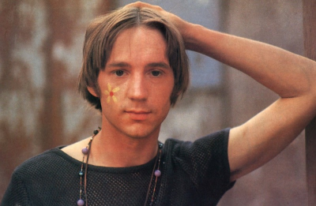

Peter Tork dies age 77
 Peter Tork, the bassist for the Monkees, has died aged 77. Tork, who also sang on a number of the band’s songs and played keyboards, had been diagnosed with a rare form of tongue cancer in 2009, though the cause of his death, which was confirmed by his sister, has not been announced.
Born in Washington DC in 1942, Tork – whose real name was Peter Thorkelson – joined the Monkees when he was 24 after the quartet were brought together by US TV executives aiming to create a teenage guitar-pop sensation to match the Beatles. Tork was recommended to audition by Stephen Stills of Crosby, Stills, Nash and Young, and was already an accomplished musician in his own right, having played on the Greenwich Village folk scene in the early 1960s. He said he was “mortified” when he turned up to an early Monkees studio date to be told that their band’s album had already been recorded by session musicians.